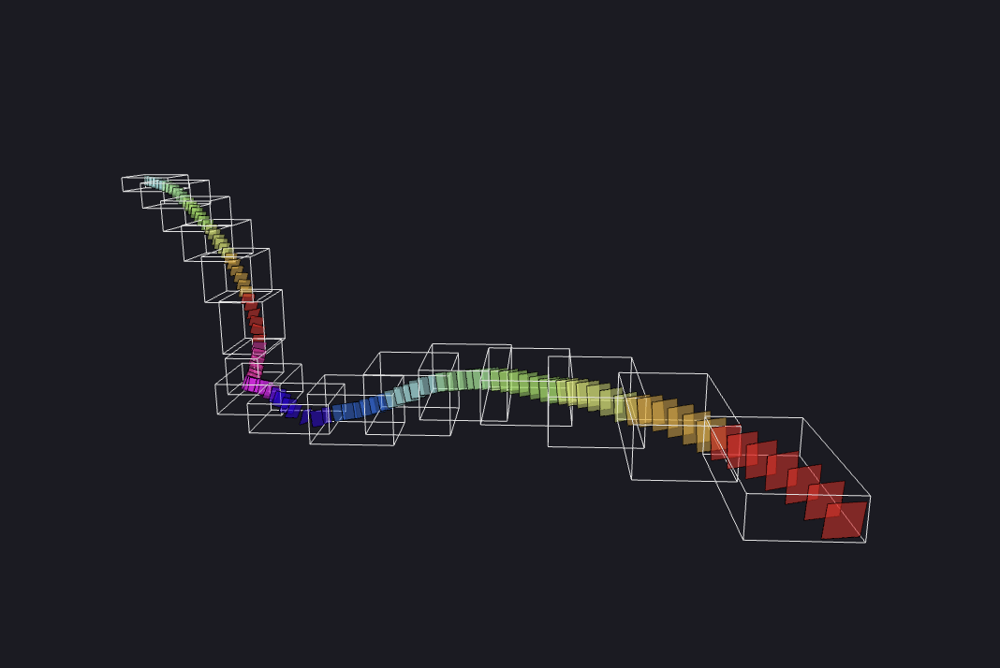
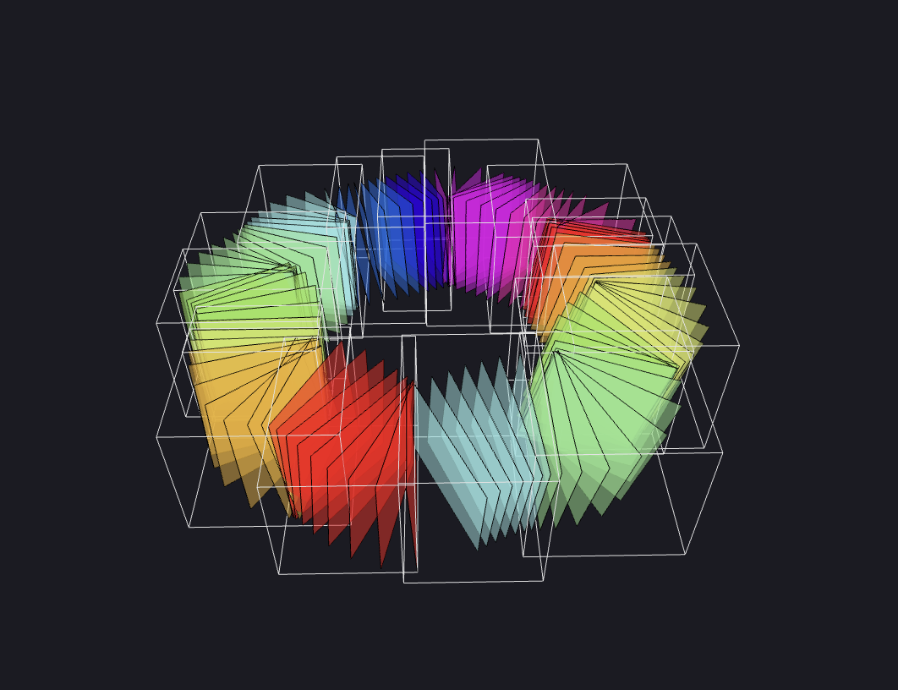

Ouroboros
or-uh-bore-us

Extract ROIs from cloud-hosted medical scans.
Ouroboros is a desktop app (built with Electron) and a Python package (with a CLI).
The desktop app uses Docker to build and run its Python server. For this reason, Docker is required to run Ouroboros.
If you are interested in using the Python package for its CLI or for a custom usecase, check out the python folder in the main repository.
Ouroboros also has a Plugin System. Plugin servers are also run in Docker.
Usage Guide
It is recommended that you read these pages in order.
Ouroboros Explanation
A user of Ouroboros may have a multi-terabyte volumetric scan, hosted with the Neuroglancer family of tools (i.e. cloud-volume).
Perhaps there is a long, relatively sparse structure (ROI), like a nerve or a blood vessel that crosses the entire scan. Even with a well-equipped computer, it would be difficult to segment the entire stucture in one pass due to RAM limitations.
Ouroboros provides a solution. A user first traces the structure in Neuroglancer with sequential annotation points, and then saves the JSON configuration to a file.
Ouroboros opens this configuration file and cuts rectangular slices along the annotation path, producing a straightened volume with the ROI at the center of each slice (usually much smaller than the original scan).
 Every tenth slice in a circular annotation path, rendered in Ouroboros's Slicing Page.
From there, the user segments the much smaller straightened volume with their choice of segmentation system. Then, Ouroboros backprojects the segmented slices into the original volume space (unstraightens it), producing a full segmentation.